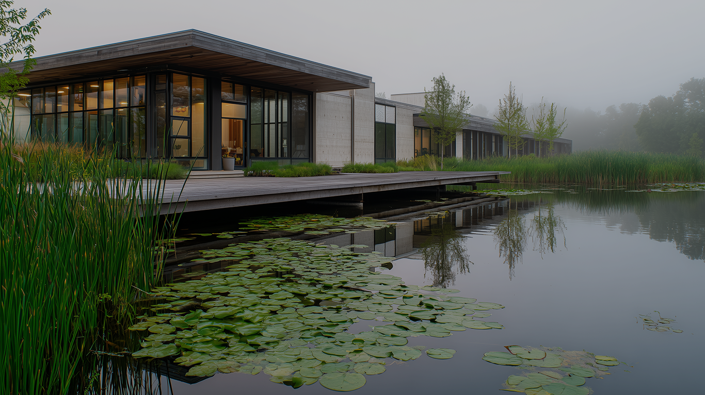
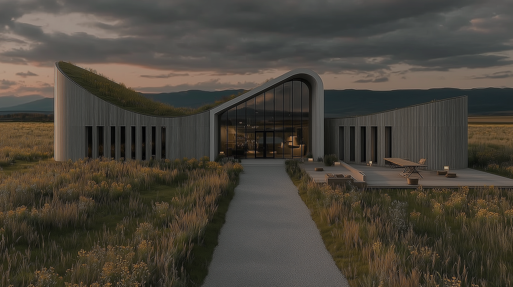
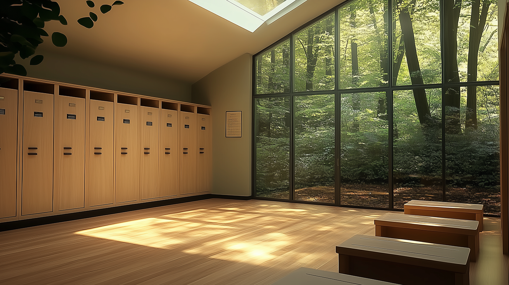

*Вы можете арендовать наши залы для репетиций, съёмок
или мероприятий — просто напишите нам в Telegram
В лесу

Около пруда

Около пруда
Филиал в лесу
Тихая лесная тень, свежесть мха и пение птиц
создают идеальные условия для
сосредоточенной работы над техникой
и выражением.
первый, главный и самый любимый ! первый, главный и самый любимый !
первый, главный и самый любимый !
Залы
Внутри — 4 оборудованных светлых и красивых зала
с амортизирующим покрытием, вентиляцией, зеркалами во весь рост и
зоной для отдыха после танцев.
Зал «Лепесток» 200 м²
Зал «Пыльца» 80 м²
Зал «Земляника» 45 м²
Зал «Роса» 80 м²
Раздевалки
В здании предусмотрены 3 раздевалки — светлые, просторные, с
индивидуальными шкафчиками, лавками и крючками для
балетной формы. Всё организовано удобно и функционально для
подготовки к занятиям.

Концертные залы
Просторный зал с высокими потолками и акустически продуманной
отделкой. С окнами в пол, которые дают свет во время тренировок,
но которые закрываются и создают уют во время концертов. И
маленький зал для уютных концертов
Филиал у пруда
Спокойные воды, журчание ручья и стрекот стрекоз
создают особую атмосферу уединения
и вдохновения для тонкой балетной работы.
спокойный, глубокий и вдохновляющий ! спокойный, глубокий и
вдохновляющий ! спокойный, глубокий и вдохновляющий !
Залы
Внутри — 4 оборудованных светлых и красивых зала
с амортизирующим покрытием, вентиляцией, зеркалами во весь рост и
зоной для отдыха после танцев.
Зал «Белоснежка» 45 м²
Зал «Зефирка» 52 м²
Зал «Эйфория» 45 м²
Зал «Бал» 200 м²
Раздевалки
В здании предусмотрены 3 раздевалки — светлые, просторные, с
индивидуальными шкафчиками, лавками и крючками для
балетной формы. Всё организовано удобно и функционально для
подготовки к занятиям.
Лаунж-зоны
Уютные лаунж-пространства с видом на воду, мягкими креслами,
лёгкими занавесками и ароматом
трав. Идеальны для отдыха, чтения или обмена впечатлениями
после занятий.
Филиал на лугу
Простор лугов, шелест высокой травы и щебет ласточек
вдохновляют на свободу движения
и раскрытие внутреннего света через танец.
просторный, солнечный и свободный ! просторный, солнечный и свободный !
просторный, солнечный и свободный !
Залы
Внутри — 4 оборудованных светлых и красивых зала
с амортизирующим покрытием, вентиляцией, зеркалами во весь рост и
зоной для отдыха после танцев.
Зал «Лютик» 45 м²
Зал «Ромашка» 68 м²
Зал «Колокольчик» 100 м²
Зал «Клевер» 80 м²
Раздевалки
В здании предусмотрены 3 раздевалки — светлые, просторные, с
индивидуальными шкафчиками, лавками и крючками для
балетной формы. Всё организовано удобно и функционально для
подготовки к занятиям.
Открытая сцена
Пространство под открытым небом,
где солнце освещает каждое движение,
а ветер помогает уловить ритм природы.
Идеально для выступлений в живой атмосфере лета.